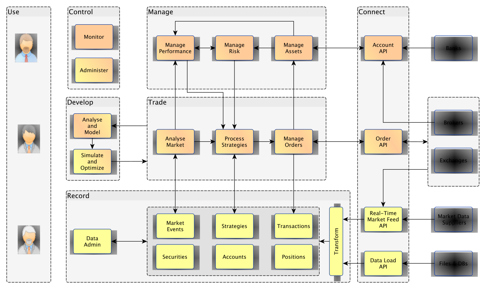

You are startled by the sound of an alarm. It is followed by an urgent voice which warns that the Arcada has been boarded by unknown intruders. It ends abruptly.
>
start of Space Quest I
Most hackers involved in the world of trading enter from the technology side of the business. And there's two main gateways are via trader enhancement or trader replacement. Making traders smarter and faster using technology is one well worn road. There's lots of room to streamline the human trading process: automation of regular tasks, expansion of back-testing capabilities and easy gains to be had in better trader dashboards to get information when and where needed.
Trader replacement is a little harder but also hackable. There's plenty of tricks out there to shave a few msecs of computation and execution time, and bringing bigdata testing and conversion of a sometimes fuzzy human rule-set into a more rigorous computational exercise.
Either way, a trading runtime ends up paving the cow-paths of institutional finance which look somewhat like this:
Over at hyperq, we've been thinking about the above diagram and how to get together a decent trading runtime. Now when a wildly ambitious objective meets a meager resource base you have two options:
- go on a kamikaze death march
- take the team on a long lunch and redefine
{kind=link}
Since this is all open source, our long lunch redefinitional musings led us to computer sciencing the bejesus out of the trading problem domain.
Here's the alternative design specification document we wrote on one of the drink coasters:
trade :: [MarketData a] -> Book b -> IO [Order b] main = forever . do . trade
Having just cut 3 months out of our critical path we even had time for some Zork:
You are in an open field west of a big white house with a boarded front door. There is a small mailbox here.
>
Zork
Long lunch over and the new specs still seem sweet. Some immediate ideas:
- the concept of market data becomes naturally abstractable. Data can include multiple sources, news flow or whatever universe observation you can think of. Do you need the Market prefix?
- there is an immediate reminder of real world interaction with the IO monad.
- subsequent functions scan more easily and can be categorized - often as a
matter of taste. For example, a complex event process (CEP), a fashionable
big deal in trading system circles, seems logically to have this type:
cep :: [MarketData a] -> MarketData a
Whether to put this prior to or inside the trade function then becomes a matter of taste.
- Should the input be [Maybe MarketData a]? This puts the real world likelihood of the data feed being down front and center, rather than designing a system assuming an idealized world and then panicking when something breaks.
More generally, a more hacker approach leads you away from bigdata phd solutions that dominate hft and algorithmic trading and towards the important, small and obvious stuff (that may not lend themselves to a phd dissertation). The market is closed (unexpectedly) - I better not try and trade, or I had better try and trade elsewhere given the sorry state of Book a. Gee, there's a lot of volatility out and about today - is it a big news day? The last news piece of note was a facebook announcement. Wow, facebook really tanked but but zygna didn't - what gives there? Someone must have forgot to turn the market feed on. etc etc
And I suspect this approach leads further to a big, big gap in the market. Imagine on a busy day in the market you could slow down time. The e-mini suddenly drops by 1% in the space of a few heartbeats. What just happened? Rewind the video tape and look more carefully at the last few minutes. Look back at the news-flow over the last 10 minutes and look for keywords. Check other markets - are they all tanking or is it just a local event? Or did some human just enter an extra zero or three again?
If you can do all of that in a few seconds your process is way ahead of the competition. The HFT guys have already panicked and run away to hide behind their statistical order flow models. Algorithmic trades are pinging their stop loss instructions blindly creating what may be a forecastable trend. Meanwhile, discretionary day traders have just noticed a small section of one of their screen is flashing red…
In this zone, a hacker trader with a hacker-like trading process can find all sorts of edges and market tells.
So do we want our trading process to look and feel like a big finance organizational structure? Or should for hyperq to have a Roger Wilco attitude:
Anyway, I aborted the launch and jetted out of there in an escape pod. I crawled into the sleep chamber, and the next thing I knew, I woke up in a trash freighter! Yeah, things didn't look too good, but I blasted out of the freighter in an old jalopy I resurrected from the rubble. ~ Roger Wilco
Much more fun than a death march to pave the cow-paths.